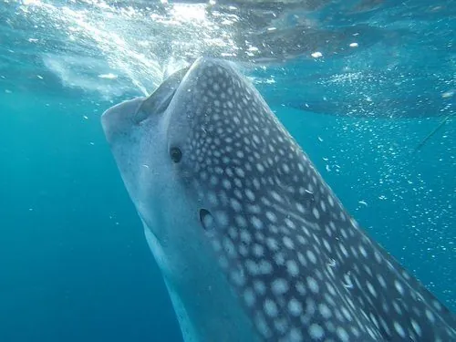

鱼类 · 动物界
鲸鲨 Rhincodon typus

现存最大的鱼类，体长可达 18 m，体表布满棋盘状白色斑点，以滤食浮游生物为生，性情温顺。
- 分类
- 门脊索动物门纲软骨鱼纲目须鲨目科鲸鲨科属鲸鲨属
- 栖息环境
- 热带和暖温带海域的表层水体，也出现在珊瑚礁与大陆架边缘
- 地理分布
- 全球热带、亚热带和暖温带海域，中国南海、东海及台湾周边可见
- 保护级别
- IUCN 濒危（EN）；中国国家二级保护动物；CITES 附录Ⅱ
物种志
鲸鲨体型庞大而修长，体长通常 8–12 m，最大记录超过 18 m，体重可达 20 t 以上，是现存最大的鱼类。它的口宽可达 1.5 m，张口时像一张巨大的漏斗，口中长着数百排细小牙齿，却从不用于咀嚼；体侧有 5 对宽大的鳃裂和纵向皮褶，滤食时海水从口中涌入、经鳃裂排出，浮游生物被鳃耙截留。背部和体侧呈深灰蓝色，密布白色圆斑与横纹，腹部雪白，每尾个体的斑点图案都不相同，如同指纹。
鲸鲨生活在全球热带和暖温带海域，偏好水温较高的表层水体，常单独活动或三五成群，有时会聚集在浮游生物丰富的海域觅食，主食浮游甲壳类、小鱼和鱼卵。它具有很强的洄游性，会沿相对固定的路线长距离迁移；繁殖方式为卵胎生，雌鲨每胎可产下数百尾幼鲨，幼鲨出生时体长约 40–60 cm。由于渔业兼捕和针对性捕捞，鲸鲨全球种群数量持续下降，IUCN 将其列为濒危，中国于 2021 年将其列为国家二级保护动物，国际贸易也受到 CITES 附录Ⅱ管制。
形态与习性
- 食性滤食浮游甲壳类、小鱼、鱼卵和乌贼幼体
- 体长通常 8–12 m，最大记录约 18 m
- 体重常见 15–20 t，最大个体估计超过 30 t
- 寿命估计 70–100 年
- 繁殖卵胎生，每胎可达数百尾幼鲨，初生体长约 40–60 cm
- 栖息深度多在 0–200 m 表层活动，可下潜至约 1900 m
趣味知识
- 鲸鲨的斑点像指纹一样独一无二，研究人员用照片就能识别每一尾个体。
- 它牙齿细小、多达数千颗，却只是滤食时的“筛子”，从不用来咬东西。
- 鲸鲨性情温和，潜水员可与它同游，因此被称为“温柔的巨人”。